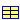
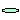
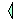
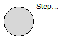
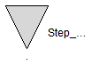
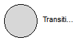
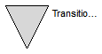
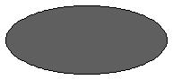
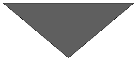

| Name | Description |
|---|---|
|  Node | Node of a state machine to communicate information between steps (for suspend/resume actions and to guarantee a valid graph) |
| Input port of a step without icon | |
| Output port of a step without icon | |
| Step_in | Input port of a step |
| Step_out | Output port of a step |
|  Composite_resume | Resume port of a composite step |
|  Composite_suspend | Suspend port of a Composite |
| Transition_in_base | Input port of a transition without an icon |
| Transition_out_base | Output port of a transition without icon |
| Transition_in | Input port of a transition |
| Transition_out | Output port of a transition |
| EntryPort | Entry port of a composite, same as a transition outPort |
| ExitPort | Exit connector of a composite, same as transition inPort |
| PartialParallelBase | Base class of a parallel component (including a composite step as special case) |
record Node
"Node of a state machine to communicate information between steps (for suspend/resume actions and to guarantee a valid graph)"
Boolean suspend
"= true, if the composite step is terminated via a suspend port";
Boolean resume "= true, if the composite step is entered via a resume port";
function equalityConstraint
input Node node1;
input Node node2;
output Real residue[0];
algorithm
assert(node1.suspend == node2.suspend and
node1.resume == node2.resume,"Internal error");
end equalityConstraint ;
end Node;
| Type | Name | Description |
|---|---|---|
| input Boolean | fire | true, if transition fires and step is activated |
| Node | node | Communicates suspend/resume flags and is used to check the correct connection structure. |
| output Boolean | checkUnaryConnection | Is used to guarantee that only 1:1 connections are possible |
| input Boolean | checkOneDelayedTransitionPerLoop | Is used to check that every connection loop has at least one delayed transition |
connector Step_in_base "Input port of a step without icon"
input Boolean fire "true, if transition fires and step is activated";
Node node
"Communicates suspend/resume flags and is used to check the correct connection structure.";
// only for checking properties of the graph
output Boolean checkUnaryConnection
"Is used to guarantee that only 1:1 connections are possible";
input Boolean checkOneDelayedTransitionPerLoop
"Is used to check that every connection loop has at least one delayed transition";
end Step_in_base;
| Type | Name | Description |
|---|---|---|
| output Boolean | available | = true, if step is active and firing is possible |
| input Boolean | fire | = true, if transition fires and step is deactivated |
| Node | node | Communicates suspend/resume flags and is used to check the correct connection structure. |
| output Boolean | checkOneDelayedTransitionPerLoop | Is used to check that every connection loop has at least one delayed transition |
connector Step_out_base "Output port of a step without icon"
output Boolean available "= true, if step is active and firing is possible";
input Boolean fire "= true, if transition fires and step is deactivated";
Node node
"Communicates suspend/resume flags and is used to check the correct connection structure.";
// only for checking properties of the graph
output Boolean checkOneDelayedTransitionPerLoop
"Is used to check that every connection loop has at least one delayed transition";
end Step_out_base;

| Type | Name | Description |
|---|---|---|
| input Boolean | fire | true, if transition fires and step is activated |
| Node | node | Communicates suspend/resume flags and is used to check the correct connection structure. |
| output Boolean | checkUnaryConnection | Is used to guarantee that only 1:1 connections are possible |
| input Boolean | checkOneDelayedTransitionPerLoop | Is used to check that every connection loop has at least one delayed transition |
connector Step_in "Input port of a step" extends Step_in_base;end Step_in;

| Type | Name | Description |
|---|---|---|
| output Boolean | available | = true, if step is active and firing is possible |
| input Boolean | fire | = true, if transition fires and step is deactivated |
| Node | node | Communicates suspend/resume flags and is used to check the correct connection structure. |
| output Boolean | checkOneDelayedTransitionPerLoop | Is used to check that every connection loop has at least one delayed transition |
connector Step_out "Output port of a step" extends Step_out_base;end Step_out;
| Type | Name | Description |
|---|---|---|
| input Boolean | fire | true, if transition fires and step is activated |
| Node | node | Communicates suspend/resume flags and is used to check the correct connection structure. |
| output Boolean | checkUnaryConnection | Is used to guarantee that only 1:1 connections are possible |
| input Boolean | checkOneDelayedTransitionPerLoop | Is used to check that every connection loop has at least one delayed transition |
connector Composite_resume "Resume port of a composite step" extends Step_in_base;end Composite_resume;
| Type | Name | Description |
|---|---|---|
| output Boolean | available | = true, if step is active and firing is possible |
| input Boolean | fire | = true, if transition fires and step is deactivated |
| Node | node | Communicates suspend/resume flags and is used to check the correct connection structure. |
| output Boolean | checkOneDelayedTransitionPerLoop | Is used to check that every connection loop has at least one delayed transition |
connector Composite_suspend "Suspend port of a Composite" extends Step_out_base;end Composite_suspend;
| Type | Name | Description |
|---|---|---|
| input Boolean | available | = true, if step connected to the transition input is active and firing is possible |
| output Boolean | fire | = true, if transition fires and the step connected to the transition input is deactivated |
| Node | node | Communicates suspend/resume flags and is used to check the correct connection structure. |
| input Boolean | checkOneDelayedTransitionPerLoop | Is used to check that every connection loop has at least one delayed transition |
connector Transition_in_base
"Input port of a transition without an icon"
input Boolean available
"= true, if step connected to the transition input is active and firing is possible";
output Boolean fire
"= true, if transition fires and the step connected to the transition input is deactivated";
Node node
"Communicates suspend/resume flags and is used to check the correct connection structure.";
// only for checking properties of the graph
input Boolean checkOneDelayedTransitionPerLoop
"Is used to check that every connection loop has at least one delayed transition";
end Transition_in_base;
| Type | Name | Description |
|---|---|---|
| output Boolean | fire | true, if transition fires and step connected to the transition output becomes active |
| Node | node | Communicates suspend/resume flags and is used to check the correct connection structure. |
| input Boolean | checkUnaryConnection | Is used to guarantee that only 1:1 connections are possible |
| output Boolean | checkOneDelayedTransitionPerLoop | Is used to check that every connection loop has at least one delayed transition |
connector Transition_out_base
"Output port of a transition without icon"
output Boolean fire
"true, if transition fires and step connected to the transition output becomes active";
Node node
"Communicates suspend/resume flags and is used to check the correct connection structure.";
// only for checking properties of the graph
input Boolean checkUnaryConnection
"Is used to guarantee that only 1:1 connections are possible";
output Boolean checkOneDelayedTransitionPerLoop
"Is used to check that every connection loop has at least one delayed transition";
end Transition_out_base;
 Modelica_StateGraph2.Internal.Interfaces.Transition_in
Modelica_StateGraph2.Internal.Interfaces.Transition_in
Extends from Transition_in_base (Input port of a transition without an icon).
| Type | Name | Description |
|---|---|---|
| input Boolean | available | = true, if step connected to the transition input is active and firing is possible |
| output Boolean | fire | = true, if transition fires and the step connected to the transition input is deactivated |
| Node | node | Communicates suspend/resume flags and is used to check the correct connection structure. |
| input Boolean | checkOneDelayedTransitionPerLoop | Is used to check that every connection loop has at least one delayed transition |
connector Transition_in "Input port of a transition" extends Transition_in_base;end Transition_in;

Extends from Transition_out_base (Output port of a transition without icon).
| Type | Name | Description |
|---|---|---|
| output Boolean | fire | true, if transition fires and step connected to the transition output becomes active |
| Node | node | Communicates suspend/resume flags and is used to check the correct connection structure. |
| input Boolean | checkUnaryConnection | Is used to guarantee that only 1:1 connections are possible |
| output Boolean | checkOneDelayedTransitionPerLoop | Is used to check that every connection loop has at least one delayed transition |
connector Transition_out "Output port of a transition" extends Transition_out_base;end Transition_out;

Extends from Transition_out_base (Output port of a transition without icon).
| Type | Name | Description |
|---|---|---|
| output Boolean | fire | true, if transition fires and step connected to the transition output becomes active |
| Node | node | Communicates suspend/resume flags and is used to check the correct connection structure. |
| input Boolean | checkUnaryConnection | Is used to guarantee that only 1:1 connections are possible |
| output Boolean | checkOneDelayedTransitionPerLoop | Is used to check that every connection loop has at least one delayed transition |
connector EntryPort "Entry port of a composite, same as a transition outPort" extends Transition_out_base;end EntryPort;

Extends from Transition_in_base (Input port of a transition without an icon).
| Type | Name | Description |
|---|---|---|
| input Boolean | available | = true, if step connected to the transition input is active and firing is possible |
| output Boolean | fire | = true, if transition fires and the step connected to the transition input is deactivated |
| Node | node | Communicates suspend/resume flags and is used to check the correct connection structure. |
| input Boolean | checkOneDelayedTransitionPerLoop | Is used to check that every connection loop has at least one delayed transition |
connector ExitPort "Exit connector of a composite, same as transition inPort" extends Transition_in_base;end ExitPort;
Parallel splitting of execution path including special cases so that step is: autonomous, composed, parallel unsynchronized, parallel with synchronized outputs.
| Type | Name | Default | Description |
|---|---|---|---|
| Boolean | initialStep | false | =true, if initial step (start state machine at entry ports of Parallel) |
| Boolean | use_inPort | true | =true, if inPort enabled |
| Boolean | use_outPort | false | =true, if outPort enabled |
| Boolean | use_suspend | false | =true, if suspend and resume ports enabled |
| Boolean | use_activePort | false | =true, if activePort enabled |
partial block PartialParallelBase
"Base class of a parallel component (including a composite step as special case)"
parameter Integer nIn(min=0)=0 "Number of input connections";
parameter Integer nOut(min=0)=0 "Number of output connections";
parameter Integer nSuspend(min=0)=0 "Number of suspend ports";
parameter Integer nResume(min=0)=0 "Number of resume ports";
parameter Integer nEntry(min=0)=0 "Number of entry branches";
parameter Integer nExit(min=0)=0 "Number of exit branches";
parameter Boolean initialStep=false
"=true, if initial step (start state machine at entry ports of Parallel)";
parameter Boolean use_inPort = true "=true, if inPort enabled";
parameter Boolean use_outPort = false "=true, if outPort enabled";
parameter Boolean use_suspend = false
"=true, if suspend and resume ports enabled";
parameter Boolean use_activePort = false "=true, if activePort enabled";
output Boolean active(final start=initialStep, fixed=true)
"= true if composite/parallel step is active, otherwise it is not active";
protected
parameter Integer nExit2 = if use_outPort then nExit else 0;
parameter Integer nMinBranches = min(nEntry, nExit);
Node node
"Node of Parallel component to handle rootIDs from inPort to outPort transitions";
Boolean newActive(start=initialStep, fixed=true)
"Value of active in the next iteration";
Boolean finished(start=not initialStep, fixed=true);
Boolean inport_fire(start=false, fixed=true) "One of the inports fires";
Boolean outport_fire "One of the outports fires";
Boolean suspend_fire(start=false, fixed=true)
"One of the suspend ports fires";
Boolean resume_fire "One of the resume ports fires";
Boolean entry_fire(start=false, fixed=true) "One of the entry ports fires";
Boolean startTransition(start=true, fixed=true)
"Initialize entry port for autonomous step";
Boolean checkOneDelayedTransitionPerLoopIn;
Integer firstActive(start=0, fixed=true)
"= 1, if step becomes the first time active, for future activations, its value is 2. Is used to correctly initialize if nIn=0 and nResume>0";
Integer entryIndices[nEntry] "exit[i] belongs to entry[rootIndices[i]]";
Boolean entry_restart[nEntry]
"elements corresponding to the entry array deciding whether or not they should be restarted upon resume when finished (information is collected from ";
// Local connectors of conditional connectors
Step_in local_inPort[nIn];
Step_out local_outPort[nOut];
Composite_suspend local_suspend[nSuspend];
Composite_resume local_resume[nResume];
EntryPort local_entry[nEntry];
ExitPort local_exit[nExit2];
Boolean oldActive(start=initialStep, fixed=true)
"Value of active when CompositeStep was aborted";
equation
if use_outPort then
assert(nEntry >= nExit,
"The number of entry branches is not greater or equal to the number of exit branches of a parallel step.");
assert(nExit > 0, "Since outPort is enabled, there must be at least one connection to the exit port");
end if;
assert(nIn==0 and nResume==0 and initialStep or nIn > 0 or nResume > 0,
"Parallel has neither an inPort, a resume port nor is set to be an initial step.\n" +
"One of these must be true in order to initialize correctly");
when {outport_fire, pre(entry_fire)} then
finished = outport_fire;
end when;
when node.suspend then
oldActive = active;
end when;
// Set active state
if initialStep then
startTransition = pre(startTransition) and not pre(inport_fire);
inport_fire = pre(startTransition) or Modelica_StateGraph2.Blocks.BooleanFunctions.anyTrue(
local_inPort.fire);
else
startTransition = false;
inport_fire = Modelica_StateGraph2.Blocks.BooleanFunctions.anyTrue(
local_inPort.fire);
end if;
outport_fire = Modelica_StateGraph2.Blocks.BooleanFunctions.anyTrue(
local_outPort.fire);
suspend_fire = Modelica_StateGraph2.Blocks.BooleanFunctions.anyTrue(
local_inPort.node.suspend) or
Modelica_StateGraph2.Blocks.BooleanFunctions.anyTrue(
local_resume.node.suspend) or
Modelica_StateGraph2.Blocks.BooleanFunctions.anyTrue(
local_suspend.fire);
resume_fire = Modelica_StateGraph2.Blocks.BooleanFunctions.anyTrue(
local_inPort.node.resume) or
Modelica_StateGraph2.Blocks.BooleanFunctions.anyTrue(
local_resume.node.resume) or
Modelica_StateGraph2.Blocks.BooleanFunctions.anyTrue(
local_resume.fire);
entry_fire = Modelica_StateGraph2.Blocks.BooleanFunctions.anyTrue(
local_entry.fire);
active = pre(newActive);
newActive = if Modelica_StateGraph2.Blocks.BooleanFunctions.anyTrue(
local_inPort.node.resume) then oldActive else inport_fire or Modelica_StateGraph2.Blocks.BooleanFunctions.anyTrue(
local_resume.fire) or active and not outport_fire and not suspend_fire;
for i in 1:nMinBranches loop
entry_restart[entryIndices[i]] = true;
end for;
for i in nMinBranches+1:nEntry loop
entry_restart[entryIndices[i]] = if nExit == 0 then true else false;
end for;
// Propagate flags between the connectors
// if initialStep or nIn == 0 and nResume > 0 then
if initialStep or nResume > 0 then
//firstActive = if active and pre(firstActive) <= 1 then pre(firstActive) + 1 else
firstActive = if (active and not suspend_fire) and pre(firstActive) <= 1 then pre(firstActive) + 1 else
if resume_fire and finished then 0 else pre(firstActive);
if firstActive == 1 then
// local_entry.fire = fill(true, nEntry);
local_entry.fire = entry_restart;
else
local_entry.fire = fill(inport_fire, nEntry);
end if;
else
firstActive = 0;
local_entry.fire = fill(inport_fire, nEntry);
end if;
local_exit.fire = fill(outport_fire, nExit2);
for i in 1:nOut loop
local_outPort[i].available = if i == 1 then
active and
Modelica_StateGraph2.Blocks.BooleanFunctions.allTrue(
local_exit.available) else
local_outPort[i-1].available and not local_outPort[i-1].fire;
end for;
for i in 1:nSuspend loop
local_suspend[i].available = if i == 1 then active and not pre(suspend_fire) else
local_suspend[i-1].available and not
local_suspend[i-1].fire;
end for;
// Check unary connections
local_inPort.checkUnaryConnection = fill(true, nIn);
local_resume.checkUnaryConnection = fill(true, nResume);
// Check Modelica_StateGraph2 structure
Connections.uniqueRoot(local_entry.node, "
The StateGraph has a wrong connection structure. Reasons:
(1) The StateGraph is initialized at two different locations (initial steps or entry ports).
(2) A transition is made wrongly out of a Parallel component.
(3) A transition is made between two branches of a Parallel component.
All these cases are not allowed.
");
entryIndices = Connections.uniqueRootIndices(local_entry.node, local_exit.node, "
The connection structure in a Parallel component is not correct:
There must be exactly one unique path from every exit port to every entry port.
This is not the case here.
");
for i in 1:nEntry loop
local_entry[i].node.suspend = active and suspend_fire or not active and pre(active);
// local_entry[i].node.suspend = suspend_fire;
local_entry[i].node.resume = resume_fire and not entry_fire;
// local_entry[i].node.resume = resume_fire;
end for;
if initialStep then
Connections.uniqueRoot(node, "uniqueRoot Error in Parallel");
node.resume = false;
node.suspend = false;
else
// In order that check works (nIn=0), provide the missing equations
if nIn==0 and nResume==0 then
node.resume = false;
node.suspend = false;
end if;
end if;
for i in 1:nIn loop
Connections.branch(local_inPort[i].node, node);
local_inPort[i].node = node;
end for;
for i in 1:nResume loop
Connections.branch(local_resume[i].node, node);
local_resume[i].node = node;
end for;
for i in 1:nOut loop
Connections.branch(node, local_outPort[i].node);
local_outPort[i].node = node;
end for;
for i in 1:nSuspend loop
Connections.branch(node, local_suspend[i].node);
local_suspend[i].node = node;
end for;
// Check loops of Modelica_StateGraph2
if initialStep then
checkOneDelayedTransitionPerLoopIn =
Utilities.initializeLoopCheck();
else
checkOneDelayedTransitionPerLoopIn =
Utilities.propagateLoopCheck(local_inPort.checkOneDelayedTransitionPerLoop)
and Utilities.propagateLoopCheck(local_resume.checkOneDelayedTransitionPerLoop);
end if;
local_suspend.checkOneDelayedTransitionPerLoop = fill(checkOneDelayedTransitionPerLoopIn, nSuspend);
if nOut == 0 or nEntry == 0 then
// no outPort connector or no branches
local_entry.checkOneDelayedTransitionPerLoop = fill(checkOneDelayedTransitionPerLoopIn, nEntry);
local_outPort.checkOneDelayedTransitionPerLoop = fill(true, nOut);
else
// local_entry[1].checkOneDelayedTransitionPerLoop = checkOneDelayedTransitionPerLoopIn;
local_entry[entryIndices[1]].checkOneDelayedTransitionPerLoop = checkOneDelayedTransitionPerLoopIn;
// During initialization it is checked whether entry and exit port connections
// are fine. The for-statements are made in such a form, that no translation
// error occurs, if this case is present. Instead, during initialization
// a meaningful error message is printed
for i in 2:nMinBranches loop
local_entry[entryIndices[i]].checkOneDelayedTransitionPerLoop = local_exit[i-1].checkOneDelayedTransitionPerLoop;
// local_entry[i].checkOneDelayedTransitionPerLoop = local_exit[i-1].checkOneDelayedTransitionPerLoop;
end for;
for i in nMinBranches+1:nEntry loop
// local_entry[i].checkOneDelayedTransitionPerLoop = true;
local_entry[entryIndices[i]].checkOneDelayedTransitionPerLoop = true;
end for;
local_outPort.checkOneDelayedTransitionPerLoop =
fill(local_exit[nMinBranches].checkOneDelayedTransitionPerLoop, nOut);
end if;
end PartialParallelBase;